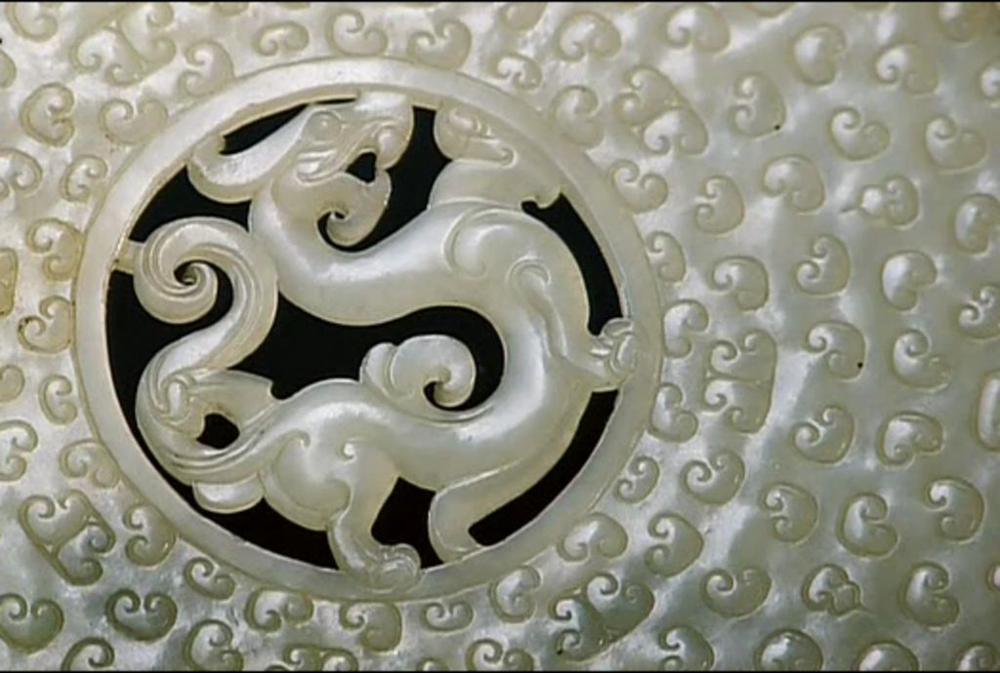

中国玉文化是一首凝固的史诗，有着浓浓的历史沉淀感，每一段历史，玉器都有它特殊的精神气质；每一段历史，玉器都有它特有的形式美感。 3.春秋战国时期玉器工艺——君子佩玉 灵动精美 春秋战国时期，封建制度孕育发展，社会处在一个大变革阶段，政治上诸侯争霸，文化上百家争鸣，玉器工艺在观念和造型纹饰上都发生了很大变化，成为折射时代精神的特殊载体。 ① 以玉比德 自从春秋以后由于儒家文化的渗入，玉器渐渐赋予了人格和道德之美把玉的温润、光泽、密度、纹理、坚硬等自然属性引申出人格之美和道德之美。因此，玉器从物质性转化为精神性，由一块冰凉的玉石变成了温情脉脉的人格美德，这种用玉、赏玉观念在中国二千多年的封建社会中影响着，延续着。 ② 飞动之势 在玉器造型上摆脱了沉闷、压抑之感而产生了造型的变化。玉器大部分已以饰玉为主流，有玉璧、玉环、玉佩、玉剑饰、玉带钩等，玉器中有大量的龙、凤、虎等形象，将动物的威猛性格、机警感觉、敏捷姿态生动地表现出来，使玉器造型生气勃发，富有动感，器形中布满S线形, 弧线灵动流畅，赋予飞动之势，似乎挣脱了旧的精神桎梏，飞向新的天地。 ③ 工精艺美 春秋战国时期，铁制工具的使用给琢玉提供了更为有利的条件，琢玉琢磨极为精美、工挺、灵巧，雕琢刀法丰富多变，琢玉工艺已十分成熟。 春秋 白玉戈
 春秋 串饰组件 春秋 串饰组件春秋 夔龙纹玉璜
春秋 龙凤玉佩
春秋 镂雕兽纹玉佩
春秋 兽面牌 黄玉质变
春秋 兽面纹饰件
春秋 兽面叶形佩
 春秋 玉剑铋 春秋 玉剑铋 春秋晚期 秦式龙纹宫灯形镂空玉佩 春秋晚期 秦式龙纹宫灯形镂空玉佩春秋晚期 四空玉璜
春秋晚期 玉牌
春秋晚期
 春秋早期 玉虬龙形佩 春秋早期 玉虬龙形佩春秋早期 玉鱼
春秋-战国 人俑
秦式龙纹残玉琮 春秋晚期
图1-4春秋早期 玉虎
图1-4战国晚期 玉镂空龙凤纹佩
 图1-5 东汉 蟠螭环 图1-5 东汉 蟠螭环战国 持礼器的祭祀玉人
战国 虎食人尊
战国 玦形玉龙
战国 立人龙虎璜形佩
战国 龙凤纹柱形玉佩
战国 龙凤玉佩
战国 龙首曲柄玉斗
战国 龙首长条形卷尾玉佩
战国 鸟首玉杖
战国 器物玉柄饰
战国 青玉龙
战国 青玉龙形佩
战国 兽面纹玉琮
 战国 双龙谷纹壁 战国 双龙谷纹壁战国 双龙首璜
 战国 双舞人 1 战国 双舞人 1战国 双舞人 2
战国 玉璜
战国 玉箭簇一对
 战国 玉龙 战国 玉龙战国 玉龙1
战国 玉镂空雁形带钩
战国 玉双犀璜
 战国 玉透雕龙纹璧 战国 玉透雕龙纹璧战国璧1
战国璧2
战国璧4
战国晚期 镂空龙凤佩
战国晚期 双舞人佩
 战国晚期 玉凤鸟形佩 副本 战国晚期 玉凤鸟形佩 副本战国晚期 玉凤鸟形佩
战国晚期 玉镂空龙凤鸟佩
 战国晚期 玉透雕双龙佩 战国晚期 玉透雕双龙佩战国早期 玉珏
 战国早期 玉兽形佩 战国早期 玉兽形佩战国早期 玉双鸟纹拱形佩
战国早期 玉透雕双龙佩
战国中期 玉带钩
战国中期 玉鹦鹉佩
|
| 珠宝设计网站 中国珠宝设计网 国际珠宝网 傲宝网 BACCARAT |
雕塑设计网站 中国雕塑网 |
玉器图库 一些挂件 一些手把件 一些摆件 |
玉器设计与雕刻大赛 上海玉器雕刻神功奖 上海玉器雕刻玉龙奖 北京玉器雕刻天工奖 |
玉器设计与工艺发展动态 玉器设计与工艺过去 玉器设计与工艺现在 玉器设计与工艺未来 |